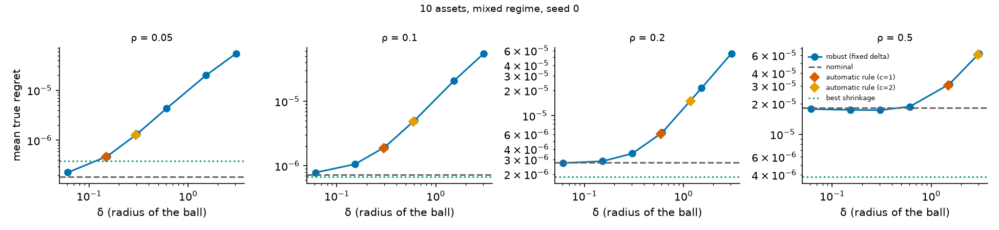
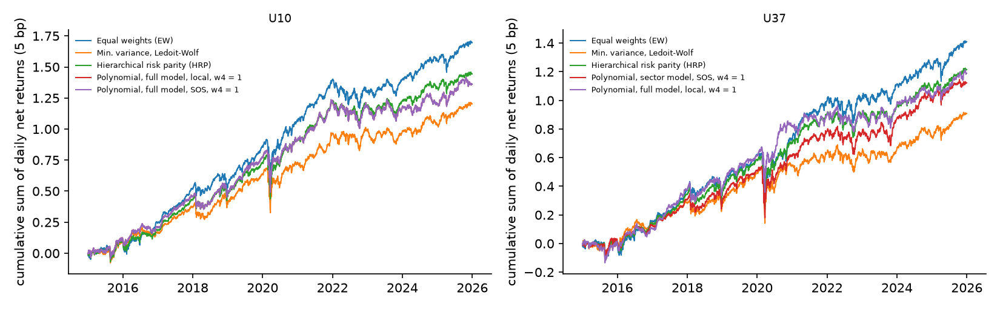

Portfolio optimization under a degree-4 polynomial risk measure via sums of squares and the Lasserre hierarchy (SDP).
An exploratory project. On real data the method does not beat the standard baselines (equal weights, minimum variance, hierarchical risk parity). I checked this as carefully as I could and report the limits as they are.
How often a standard local solver finds the best portfolio as the number of assets grows (synthetic instances; the reference is the optimum certified by the SDP).Show the model and the resultsHide the model and the results
The model
Portfolio risk that accounts for skewness and kurtosis is a polynomial of degree four in the weights . The synthetic objective of the paper is
Term by term:
TermRoleDegree
variance2
skewness-like3
kurtosis-like (the one that matters here)4
concentration terms: stylised penalty on concentrated positions4
Here is the vector of weights on assets, the covariance matrix of the returns, and , coefficients of the model. The risk is minimised over long-only portfolios whose total weight is between 0.95 and 1.
Zoom on the kurtosis-like term
This term gives the objective its degree four. The objective is in general not convex, so a local solver can stop at a local minimum. The Lasserre hierarchy replaces each monomial by a variable and solves a semidefinite program whose optimum is a lower bound on the global minimum. If a portfolio reaches that bound, it is certified optimal, to solver accuracy. The are model parameters, not the fourth co-moment tensor of a portfolio.
Experiments
Three experiments, each with a question and an expectation written down before running it. Hover over a figure, or tap it, to enlarge it and read what it shows.
A. Does local search find the global minimum?
1760 random polynomials of the form above, with n = 2 to 50 assets, in three regimes (default, mixed, stress) that differ by the size of the skewness and concentration coefficients. On each one, a local solver (SLSQP) is started K times from random portfolios and the best result is kept. It succeeds if it reaches the certified value, that is the bound given by the SDP, up to a small tolerance.
What is shown. Each panel is a regime of synthetic instances; the left one is the default regime (called “calibrated” in the code, but nothing is calibrated to data). Each curve is a number of assets n, from 2 to 50; larger n gives a lower curve. Horizontal axis, log scale: the number K of local starts, from 1 to 100. Vertical axis, between 0 and 1: the share of instances where the best of the K starts reaches the certified value (1 means always). Example: in the default regime at n = 50, one start finds the optimum on 14% of the instances, and 100 starts on 84%.
Local search often misses the global minimum, more so with more assets. In the default regime a single start misses it with probability 0.30 at n = 15 and 0.83 at n = 50 (mean over the 100 starts of each instance; using only the first start, 32% and 86% of the instances are missed, which is the K = 1 point). More starts help without closing the gap. The SDP certifies all but 29 of the 1760 instances, but only 74% of the default-regime ones at n = 50. Caveats: the comparator is SLSQP from random starts, not a global solver; the polynomials are synthetic; “certified” means to solver accuracy; when an instance is not certified its reference is the best of 100 runs, so the 100-start failure rate at n = 50 (16%) is biased downward (21.6% among certified instances).
B. Does a robust formulation protect against estimation error?
In practice the coefficients κ are estimated, with error. Here the true coefficients are known and I add noise of relative size ρ (ρ = 0.05 is an error of 5% of their norm, ρ = 0.5 of 50%), 200 draws each. The portfolio is then chosen in three ways: the nominal problem, which takes the estimate at face value; a robust formulation, which minimises the worst case over a ball of radius δ around the estimate; and shrinkage, which pulls the estimate toward a simple target with an intensity s between 0 and 1. The score is the regret: the extra risk, in the units of f, of the chosen portfolio compared with the best one for the true coefficients. It is never negative, and smaller is better.

What is shown. Four panels, one per noise level ρ = 0.05, 0.1, 0.2 and 0.5, from left to right (ρ is the size of the error on the coefficients relative to their norm). Horizontal axis, log scale: the radius δ of the ball in the robust formulation. Vertical axis, log scale: the mean regret over 200 draws, i.e. the extra risk (in the units of f) of the chosen portfolio compared with the best one for the true coefficients; lower is better. Blue line: the robust formulation at six values of δ. Diamonds: an automatic rule that sets δ from a bootstrap on 20 synthetic observations. Dashed line: the nominal problem (δ = 0). Dotted line: the best shrinkage. A point below the dashed line beats the nominal problem. Example: at ρ = 0.05 the nominal regret is 1.8 × 10−7 and the blue line is above it everywhere.
The robust formulation does not help. On this market (10 assets, mixed regime) it is worse than the nominal problem for ρ ≤ 0.2, and the loss grows with δ. At ρ = 0.5 small radii lower the regret by 2 to 5%, and larger radii are worse again. Shrinkage does better from ρ = 0.1 upward: at ρ = 0.5 and s = 0.75 the regret falls to 0.21 of the nominal value. Caveats: the noise is drawn, not real estimation error; the synthetic coefficients come from narrow ranges, which probably favours shrinkage (not tested); other uncertainty models are not covered.
C. Does it help on real data?
37 large US stocks in 9 sectors, daily prices 2009–2025. Each month from 2015 to 2025, each strategy estimates its inputs on the previous 756 trading days (about three years) and sets long-only weights, capped at 25% per stock for the optimised strategies. Two universes: U10, with 10 stocks and the full model, and U37, with all 37 stocks and a sector model that keeps only the co-moments between stocks of the same sector. The polynomial strategies (Poly) minimise a risk that mixes variance, skewness and kurtosis, with weight w4 on the kurtosis term (w4 = 1 is the reference). They are compared with equal weights, Ledoit–Wolf minimum variance and hierarchical risk parity. Costs of 5 basis points (0.05%) per unit traded are deducted.

What is shown. Left: universe U10 (10 stocks). Right: U37 (37 stocks). Horizontal axis: date, from 2015 to the end of 2025. Vertical axis: the cumulative sum of daily log-returns after costs of 5 basis points, so that 1.0 means a growth of about ×2.7 (e1), and 0 means no gain. Blue: equal weights (EW). Orange: Ledoit–Wolf minimum variance (MinVar_LW). Green: hierarchical risk parity (HRP). Red and purple: the polynomial strategies (Poly), solved locally or with the SDP certificate (SOS), with w4 = 1. A higher curve means a higher return over the period. Here equal weights end highest on both universes, at roughly 1.7 (U10) and 1.4 (U37).
On real data, no gain. The certified minimiser lowers volatility and CVaR (the mean loss on the worst 5% of days) relative to equal weights, as any risk-minimising rule does: on U10 with w4 = 1, volatility is 15.4% against 16.4%. It is not better than Ledoit–Wolf minimum variance or minimum CVaR on those measures, and no net-return difference is distinguishable from zero (all 13 intervals on U37 contain zero). Caveats: the objective has no return term; one period, one universe, no correction for multiple testing, survivorship bias. That estimation error hides the benefit is a hypothesis, not a measurement.
Authorship
The idea, the model, and the link between higher-moment portfolio risk and polynomial optimization are mine. The code was written with AI, and the search for results was AI-assisted. The paper and this short presentation were written by hand. The first version of the paper contained errors, which I corrected before running the experiments; the paper lists them in an appendix.